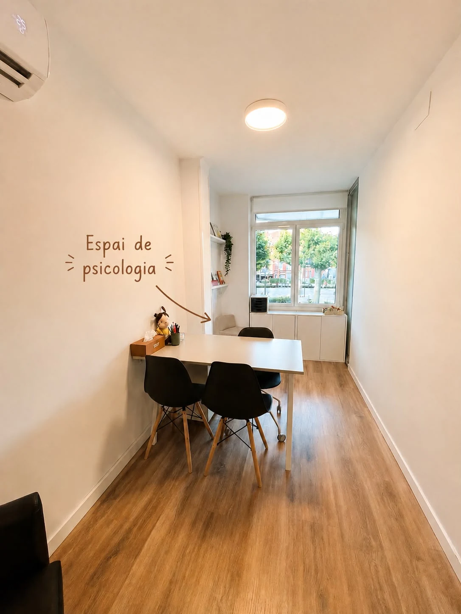
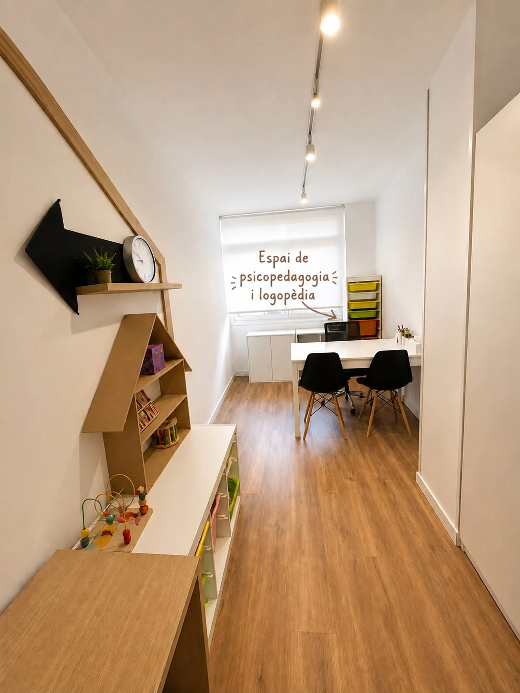
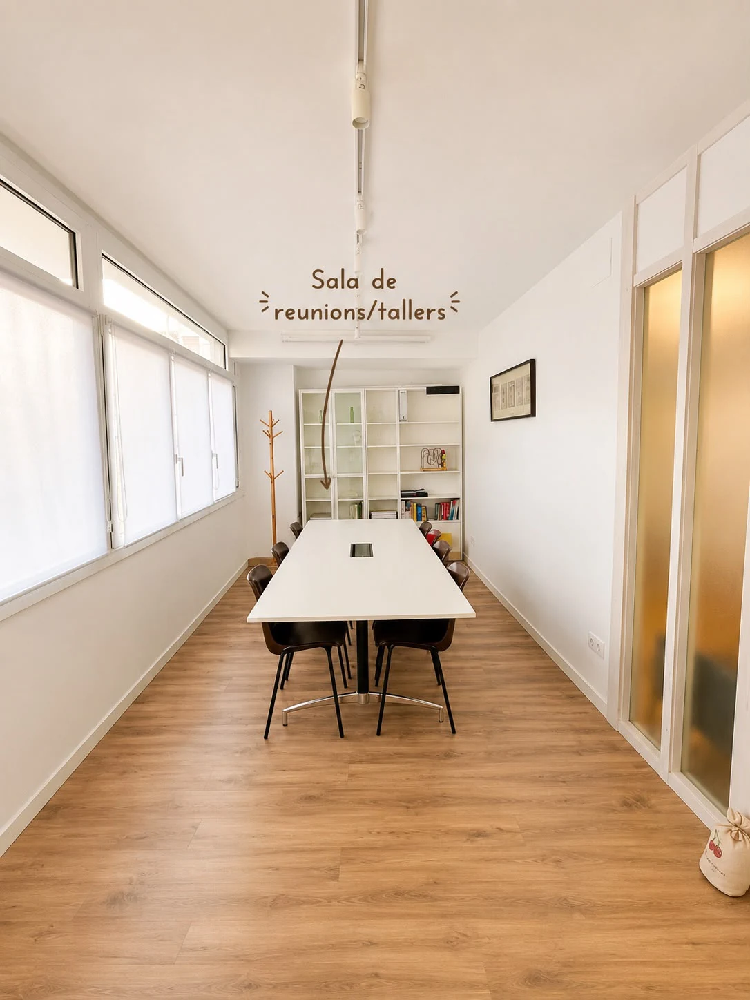

El centre
Un espai professional, tranquil i accessible al centre de Tàrrega.
Les instal·lacions d’EDIP estan pensades perquè l’experiència sigui còmoda des del primer moment, amb espais diferenciats segons el tipus d’atenció.





Ubicació
Plaça del Carme, 17, Entresol 1a.
Un centre sanitari situat al centre de la ciutat, amb atenció amb cita prèvia.
AdreçaPlaça del Carme, 17, Entresol 1a · 25300 Tàrrega, Lleida
HorariMatins i tardes amb cita prèvia
AccésAscensor i espais adaptats
Accessibilitat
Un espai còmode i preparat per a tothom.
- Accés amb ascensor fins a la planta del centre.
- Instal·lacions adaptades per a persones amb mobilitat reduïda.
- Lavabo adaptat.
- Zones de pas i sales còmodes i accessibles.
L’experiència
La calma també es dissenya.
Materials càlids, llum natural i espais diferenciats ajuden a crear una atmosfera menys clínica sense perdre rigor professional.
La web segueix aquesta mateixa idea: informació clara, espais visuals amplis i una navegació que no pressiona l’usuari.